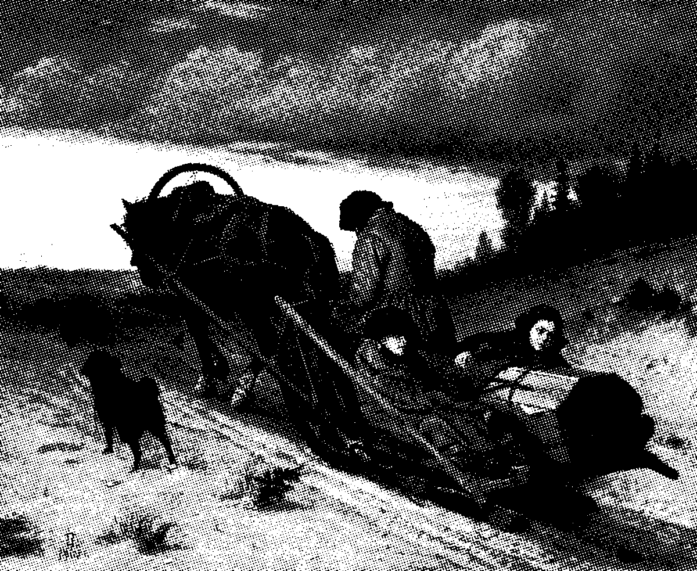

PLATE J · 10 / 12
DEATH IN ART
The sled, the black square, and the deathbed as an argument
Russian art tends to approach death through a single object held at an angle: a coffin on a sled, a square on a wall, a body on a bed.
1865–1935 · Moscow; Nemchinovka · Painting, literature, the avant-garde

J / 01
Perov, 1865
Vasily Perov’s Seeing Off the Dead (Provody pokoinika, 1865; oil on canvas, 45.3 × 57 cm; Tretyakov Gallery, inv. 5248) is small, and it is composed around a box. A peasant family rides a sled through snow; the coffin is tied behind them; a dog runs alongside. The widow sits with her back to us; the children face us.
What the picture shows is a delivery. The body is hauled across a landscape that takes no notice: huge sky, flat snow, a few bare trees. Grief here behaves like weather.
The Tretyakov Gallery’s own catalogue note connects the painting to Nekrasov’s poem Frost, Red Nose (1862–63), which describes a peasant family that has lost its breadwinner. The comparison was made by contemporaries and has been repeated by art historians; it is a documented reception, not a proof of intention.

J / 02
The deathbed as a room
Russian prose of the nineteenth century returns again and again to the deathbed as a place where a life is suddenly legible. Tolstoy’s The Death of Ivan Ilyich (1886) is built as a corridor: the dying man moves through pain, denial and an unexpected opening at the end. Chekhov’s early story The Death of a Clerk (1883) makes the same subject ridiculous: a man dies of embarrassment. Bunin’s The Gentleman from San Francisco (1915) puts a wealthy man’s death in a hotel and refuses to grant it dignity.
Three stories, three verdicts, no common school. Each uses a death to test the social order, and each gets a different result.
J / 03
The square that was a gravestone
Kazimir Malevich died in 1935 and was buried, according to the account in the Moscow press, near Nemchinovka outside Moscow, under a lone oak. A white cube with a black square was placed on the grave. The oak was later cut down, the grave was lost, and the cube disappeared.
What survives is a photograph and a painting. The black square began as an argument about painting, turned into a grave marker, and then vanished. Nowhere else in this atlas does an artwork and a missing grave coincide so exactly.


Apparatus sources · related plates · terms
Sources for this plate
- tretyakov-perov State Tretyakov Gallery — Vasilii Perov, ‘Provody pokoinika’, 1865 (collection record) (n.d.)
- mk-malevich Moskovskii komsomolets — Na vystavke v Moskve pokazali put’ Malevicha (2023)
- merridale2000 Merridale, Catherine — Night of Stone: Death and Memory in Russia (2000)
URLs, access dates and limitations are in the bibliography.